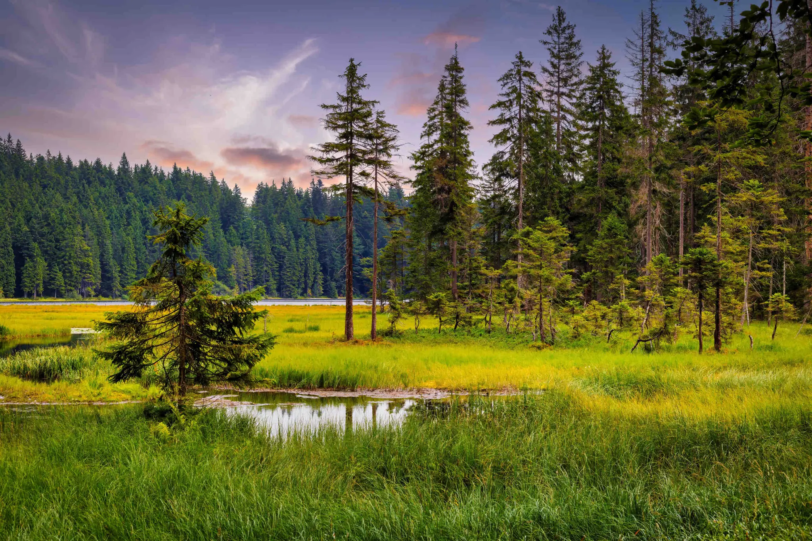

take a break with nature
Enjoy the beauty of nature and take a break from your busy life.

relax your brain form all the noise
Find peace and quiet in nature's embrace, away from the chaos of daily life.
find the place you want to go
Discover the perfect natural setting for your next adventure or retreat.

connect with nature
Experience the calming and restorative power of nature to reconnect with the natural world.